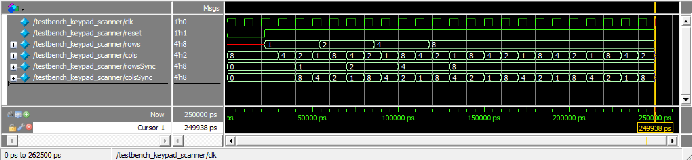
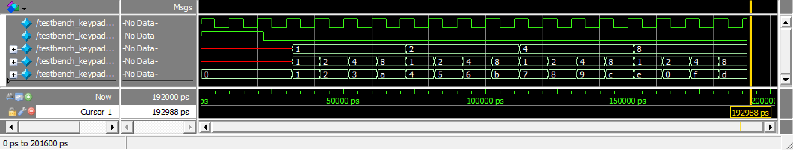
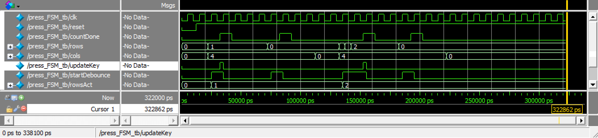

Lab 3: Keypad Scanner
Introduction
The goal of this design is to practice multiplexing by designing a FPGA that can scan a 4-by-4 matrix keypad and display the two most recently-pressed digits on a dual 7-segment display. Only one 7-segment decoder module can be used for both digits on the display, resulting in the need of time-multiplexing, and the user inputs from the keypad may be asynchronous.
Design
The top level design, lab3_gt, included multiple modules:
- The on-board high-speed oscillator (
HSOSC) from the iCE40 UltraPlus primitive library - A keypad scanner to scan the keypad for presses and synchronize the input with a synchronizer
- A debouncer for debouncing check on presses and releases, waiting for 100 ms
- A main FSM to determine “an actual press” on the keypad, design described below
- A keypad decoder to translate the row and column pressed into a 4-bit binary number
- A digit selector to toggle or select between the digits shown on the display
- A 7-segment display decoder.
The general idea of the design can be visualized with the block diagram below:
Reused from lab 1 and 2, digitSelector selects the digit which will be displayed on the dual 7-segment display with 60 Hz and segDecoder translates a given 4-bit binary number into 7-segment displayable hexadecimal. The 60 Hz frequency was chosen such that the human eyes can not catch that the two digits are turning on and off, creating the illusion that both digits are always on at the same time. The module achieves such frequency by taking in a 6 MHz clock input clk given by the high-speed oscillator and using a counter incremented at each clock cycle to toggle the enabling signal for each digit at 60 Hz. It then outputs both enabling signals and the 4-bit binary of the digit with the enabled signal.
The 7-segment display decoder contains a set of combinational logic to translate a 4-bit binary signal into a single hexadecimal value. Each segment of the display is a LED controlled by an I/O pin from the UPduino board, and the shape of each hexadecimal value is unique. As per the constraint of this lab, this module is only used once and takes the 4-bit binary input of the selected digit given by digitSelector.
The main finite state machine, pressFSM, was designed with the following state transition diagrams:
This FSM includes four states: IDLE, DEBOUNCE, HOLD, and RELEASE. The IDLE state works with the keypad_scanner to look for any pressed key. The keypad scanner drives voltage through each column of the keypad repeatedly, from column 0 to column 3, and searches for a pressed key when a corresponding row is high. When a key press is detected, the FSM transition into DEBOUNCE, which sends a startDebounce signal to the debouncer and waits for the countDone signal. The countDone signal indicates that the debounce period (100 ms) has ended, confirming that the key is in fact pressed and allowing the FSM to transition into state HOLD. Note that if the press is no longer detected (active rows changed when the same column is driven), the DEBOUNCE state moves back to the IDLE state. In state HOLD, if the rows input of the column originally pressed changes, then the FSM enters state RELEASE. This state uses a similar method with DEBOUNCE to check whether a key is actually released. The FSM moves on to IDLE if the release is true, and moves back to HOLD if it thinks that the release was simply a debounce.
In terms of the circuitry design, similar to Lab 2, the dual 7-segment display was externally accessed on a breadboard, with each of its two common anode connected to a 2N3906 PNP transistor to provide enough current. The 4-by-4 keypad matrix was also externally connected, with a pull-down resistor of \(680 \ohm\) connecting the rows to ground. Given the large \(100 k \ohm\) internal pull-up resistors in the PCB provided by the course, this pull-down resistor was chosen to be small enough to prevent the presence of a voltage divider. Two LEDs, D7 and D8, on the PCB are also used to show the states which the FSM is in, mainly for debugging purposes. The schematics for the physical circuit design is shown in the following graph:
Testing and Results
Each of the modules are testes with automated testbenches. The keypad_scanner was tested with inputting different rows and checking in two clock cycles if they are in sync. The keypad_decoder was simply tested with a set of combinational logic, making sure that the correct input of cols and rows outputs the right key in hexadecimal. The FSM module was tested, as the simulation tutorial, with key presses and releases, and ensuring that it passes through each of the 4 states. The debouncer and the digit_selector works very similarly, and only needs to show that the clock toggles.
Using Questa to simulate, the following figures show that All modules have successfully passed their testbench.

keypad_scanner
keypad_decoder
press_FSM:::
After verifying the code with testbenches, the circuit which I built also has to be tested. There was no obvious blinking or toggling between the two digits, and output are correctly registered when keys are pressed.
Conclusion
In this lab, I successfully designed and built an FPGA design that was able to correctly display the two most recently-pressed key on a 4-by-4 matrix keypad using a dual 7-segment display. There was no observable blinking between the two digits, and the most recently-pressed digit shows on the right. When multiple keys are pressed, the system only register the original one and neglect the others. Therefore, I believe that my design for this lab meets all the requirements of this lab. This week, I spent 17 hours on the lab. I spent quite some time understanding how I wanted to scan my keypad and designing the cleanest FSM possible. Thanks to those efforts, the hardware debugging did not take much time. However, I hope to become more natural with coming up with FSMs and dealing with asynchronous inputs.
AI Prototype Summary
For this AI prototype, I used ChatGPT. When feeding it the first prompt, the resulted design was unable to synthesize the first time. A synthesis error said that new_key is constantly driven from multiple places. Therefore, I asked it to fix it. Its second try also did not synthesize successfully, where there was a syntax error around always_ff. I also feeded back this error, and ChatGPT somehow came to the conclusion that my Lattice Radiant toolchain is not set up for full SystemVerilog-2005/2012 features. Later on, it decided to change its syntax to Verilog-2001 in its third try, which passed synthesis. The code it produced looks functionable at first sight. However, some of its choices, such as not having an else statement for the next state logic in FSM made me question whether this design would really work in real world.
For the second approach of using modular prompts, after tailoring the port names of my seven-segment decoder into the code which ChatGPT produced, synthesis passed the first time. The general logic between the two prompts seemed similar, but the second prompt has a cleaner code and design. For example, the FSM of the second prompt had only 3 states whereas the first one had 4. The second prompt merged the press and release debounce into one. Similarly though, I still don’t like the fact that there is no else statements for the next state logic.
Despite their uncertainty of capabilities, the prompts were able to generate synthesizable designs fairly fast enough.